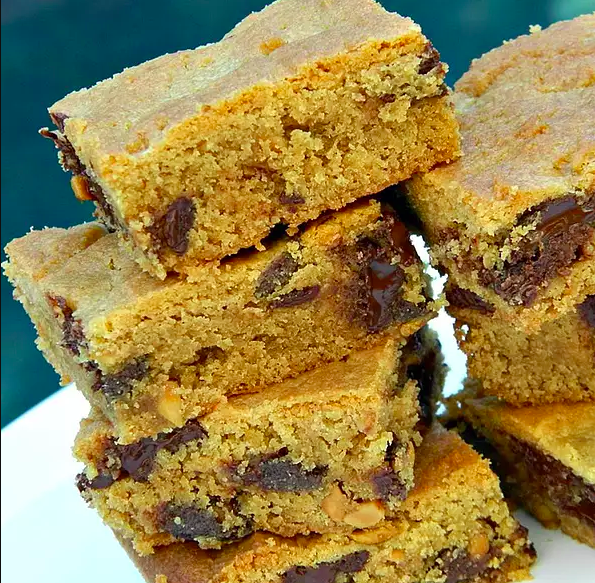

Peanut Butter Chocolate Chunk Bars

Decription
An amazing treat that will satisfy any craving for peanut butter and chocolate.
Ingredients
- ¾ cup butter, softened
- ½ cup white sugar
- ½ cup firmly packed brown sugar
- 1 egg
- 1 teaspoon vanilla extract, or more to taste
- 1 cup peanut butter
- 1 ¾ cups unbleached flour
- ¾ teaspoon baking soda
- 10 ounces chocolate chunks (such as Ghirardelli® Bittersweet Chocolate)
Steps
- Preheat oven to 375 degrees F (190 degrees C).
- Beat butter, white sugar, and brown sugar together with an electric mixer in a large bowl until light and fluffy. Beat egg and vanilla extract into the butter mixture. Add peanut butter and beat until incorporated.
- Sift flour and baking soda together in a separate bowl; mix into the butter mixture. Fold chocolate chunks into the mixture.
- Spread the batter into a 13x9-inch baking dish.
- Bake in the preheated oven until a toothpick inserted into the center comes out clean, 20 to 25 minutes. Cool completely before cutting into squares.